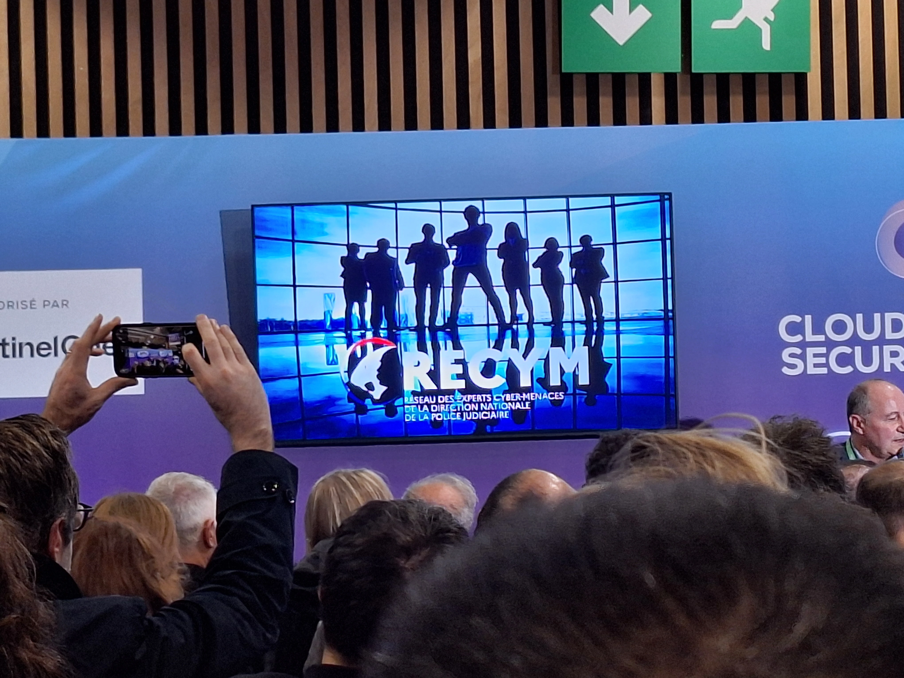
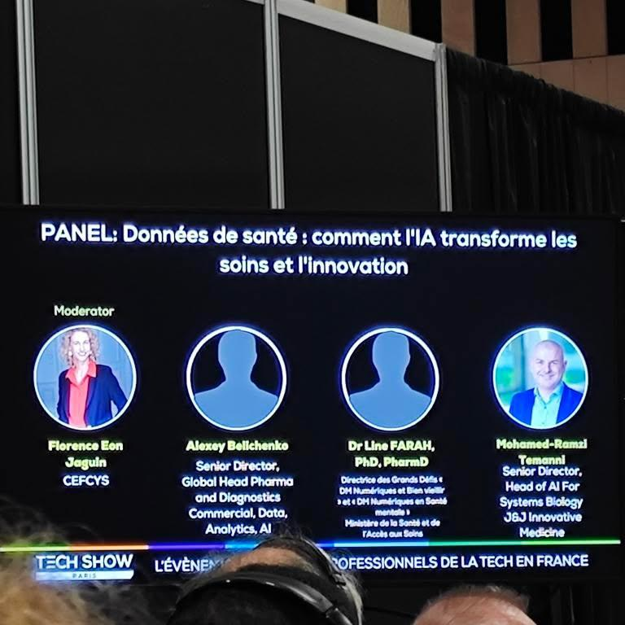

Conférence 1 : Données de santé : comment l'IA transforme les soins et l'innovation

Cette conférence a mis en lumière le rôle central de l’intelligence artificielle dans l’évolution des soins de santé et de l’innovation. Les intervenants ont montré comment les données de santé, bien exploitées, permettent de transformer des défis complexes
mais surtout comment l'IA transforme les soins et l'innovation en opportunités concrètes.
Usages

Parmi les cas d’usage abordés, l’IA générative se distingue comme un outil clé pour optimiser les processus métier. Elle peut, par exemple, aider à identifier les patients nécessitant des soins prioritaires et simplifier l’accès aux informations
essentielles. Les discussions ont également porté sur les enjeux liés à la protection des données personnelles et à la nécessité de maintenir un équilibre entre risques et avantages.

Les algorithmes prédictifs, comme ceux capables d’anticiper le taux de glycémie, illustrent parfaitement comment l’IA peut améliorer la prise en charge médicale tout en respectant les normes éthiques. Enfin, le laboratoire a été identifié
comme unecomposante stratégique du développement technologique, intégrée à la vision économique des entreprises. Cela reflète l’importance croissante de l’IA dans le paysage du business et de l’innovation.
GITHUB

Nous nous sommes rendus au stand de GitHub où nous avons appris de nombreuses choses intéressantes. Ils ont présenté GitHub comme une entreprise américaine créée en 2008 depuis rachetée par Microsoft, qui est une plateforme pour que les
développeurs collaborent à des projets de code en utilisant Git pour gérer les différentes versions de leurs fichiers. Ils nous ont montré que sur GitHub on peut créer des dépôts (repositories, les fameux « dépôts ») dans lesquels
nous pouvons placer nos projets et nous pouvons également travailler en équipe en proposant des changements au moyen de pull requests. Cela participe à organiser le travail et à éviter de casser le code des autres. Et, ce qui
est intéressant, il s’y trouve aussi beaucoup de projets publics où on peut apprendre et éventuellement contribuer. Finalement, ils apparaissent convaincus que GitHub, c’est finalement plus qu’un endroit où mettre son code: un moyen
de montrer son savoir-faire (pour valoriser un CV ou un portfolio), et surtout de collaborer facilement avec d’autres. Cela donne envie d’envisager des utilisations sérieuses.